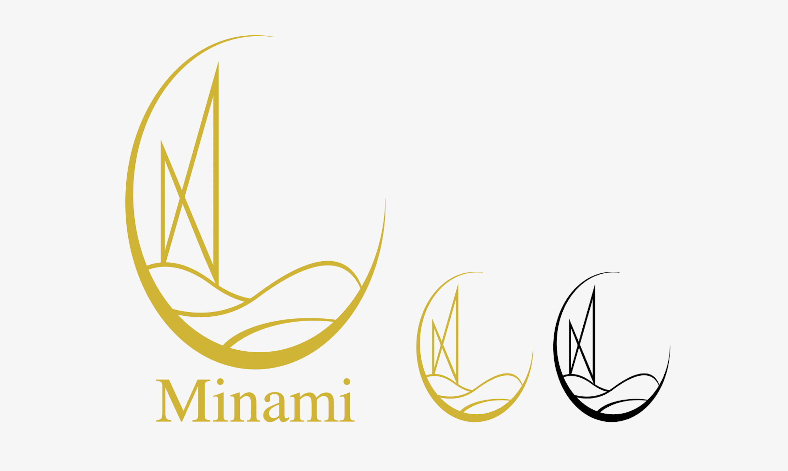

Design-Theme
現在の南区は若者離れが進み、区の平均年齢が49.8歳と、札幌市で一番高い。
そこで私は南区に若者を取り込むことを目的としたデザインを制作した。
また、南区では芸術が盛んであるとのことだった。 そこで芸術を意識したアーティスティックなデザインで若者ウケするような、全体的にスタイリッシュでかっこいいデザインを心がけた。
Logo-Design
南区の自然、芸術、広さの3つを表現したロゴ。

Flyer-Design
冬の道あかりというお祭りを図形を用いて幾何学的に抽象化して表現したフライヤー。
Original-Product
２ヶ月ごとに月を分け、それぞれの月のモチーフを抽象絵化したカレンダー。